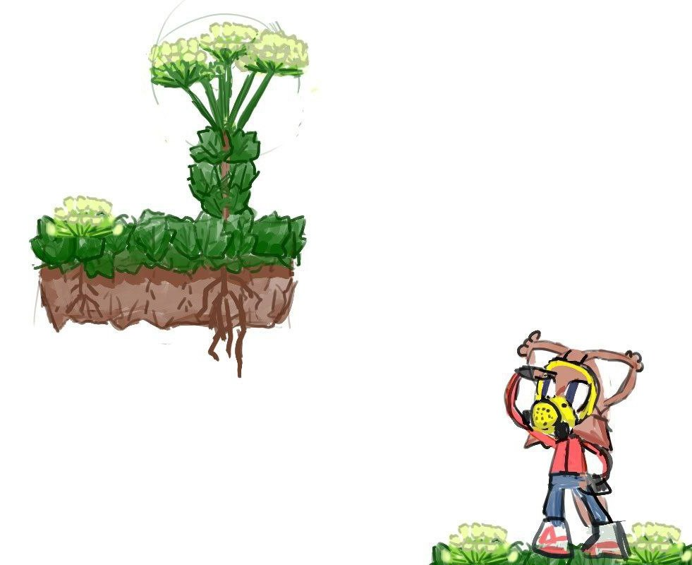

<html>
  <head>
    <meta charset="UTF-8" />
    <meta name="viewport" content="width=device-width" />
    <link rel="stylesheet" href="style.css">
    <title>Nichloya</title>
    <link rel="icon" type="image/x-icon" href="favicon.png">
  </head>
</html>

<div class="text">
<h4 id="eng">eng</h4>
<p>Hi, I&#39;m Chloya Nizhielska, a sisadmin and romhacker. I&#39;m interested in retro games, Linux, and <a href="https://en.wikipedia.org/wiki/Interslavic">the Interslavic language</a>. I listen to all kinds of music, <a href="https://youtube.com/playlist?list=PL0tPKdd8ACC_o2v59OMBpP8w43P_21JHx&amp;si=pJ6yAevZliIdIH2L">from turbofolk to bossa nova</a> and I draw, but rarely and poorly.</p>
<p>If you want to contact me, don&#39;t be afraid to write to me.</p>
<h4 id="isv">isv</h4>
<p>Zdråv, ja jesm Chloja Nižěľska — sisadmin i romhaker. Interesujų sę retro igrami, Linuxom i <a href="https://en.wikipedia.org/wiki/Interslavic">međuslovjanskym językom</a>. Slušajų vśakų muzikų, <a href="https://youtube.com/playlist?list=PL0tPKdd8ACC_o2v59OMBpP8w43P_21JHx&amp;si=pJ6yAevZliIdIH2L">od turbofolka do bossanovy</a>. Rysujų-maljųjų, no ne dobro.</p>
<p>Jestli hćete skontaktovati sȯ mnojų, ne bojite sę mi napisati.</p>

<h4 id="links-linky">links / linky</h4>
<ul>
<li><a href="https://github.com/Nichloya">GitHub</a></li>
<li><a href="https://t.me/nichloya">Telegram</a></li>
<li><a href="/garden">Digital Garden</a>, mostly in Russian language</li>
<li><a href="https://www.youtube.com/@Nichloya">YouTube</a></li>
</ul>
</div>
